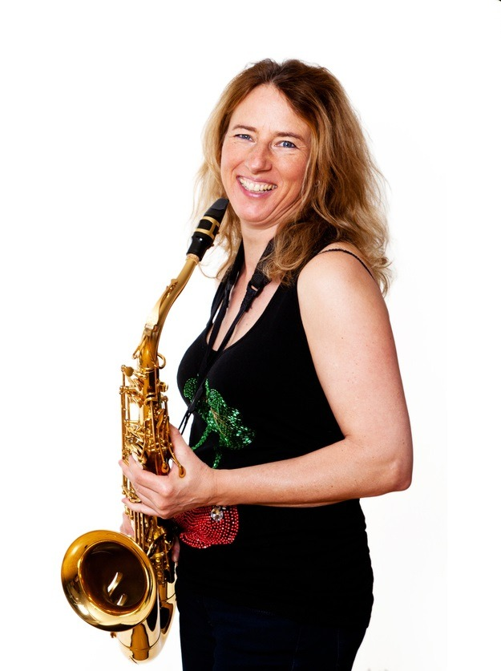

Hannah
Docent Muziek
Voor een musicus zoals Jesse is het lastig om
dat volledig professioneel te doen. Zijn ervaring op de
muziekschool bracht hem op het idee een eigen school te beginnen. Jesse zag dat Hannah lesgeven ook
geweldig
goed kon, dus vroeg hij haar om mee te doen. Ze vonden een mooi pand en ze startten met veel
enthousiasme de
muziekschool. En daar heeft hij nooit spijt van gekregen! Bij Jesse en Hannah is het leuk én leerzaam!
Hannah volgde zelf vanaf haar zesde jaar les op de muziekschool. Vanwege haar talent kreeg zij later
privéles. Op de middelbare school besteedde ze veel aandacht aan haar studie en de muziek schoot er een
beetje bij in. Maar toen ze haar diploma had behaald, was het conservatorium een logische keus. Ook op
het
conservatorium viel haar talent op. Ze werd gevraagd voor het studentenorkest en speelde in haar vrije
in
een jazzband. Daar ontmoette zij Jesse. Gedurende haar studietijd kwamen medestudenten regelmatig naar
haar
toe met het verzoek om hulp. Dat waren niet alleen trompetstudenten, maar ook studenten die andere
blaasinstrumenten bespeelden. Hannah merkte dat bijles geven haar heel goed afging en dat ze het
ontzettend
leuk vond.
Toen Jesse met het idee kwam om samen een muziekschool te beginnen, hoefde Hannah niet lang na te
denken.
Het
was dé manier om van haar hobby haar beroep te maken en om muziek maken te combineren met lesgeven. Bij
Hannah zijn jong en oud in goede handen!
Jesse
Docent Muziek
Jesse is een zeer muzikale man van 41 jaar. Hij is de vriend van Hannah. In tegenstelling tot Hannah was hij als jonge jongen niet erg geïnteresseerd in muziek en al helemaal niet in muziek maken. Hij ging liever buiten spelen met zijn vriendjes of voetballen in het park. Zijn ouders vonden het echter wel belangrijk dat hij kennisnam van muziek en ze stuurden Jesse naar blokfluitles. Daar leerde hij de beginselen en leerde hij noten lezen.
Opleiding
Op de middelbare school was al duidelijk hoe talentvol hij was. Daarom ging hij naar het conservatorium, waar hij Hannah ontmoette. Hij richtte zich op vele verschillende instrumenten en werd opgeleid tot een allround musicus. Maar zijn liefde voor de saxofoon en jazz bleef. Als bijbaantje gaf hij ook les op een muziekschool en ook dat ging hem goed af.